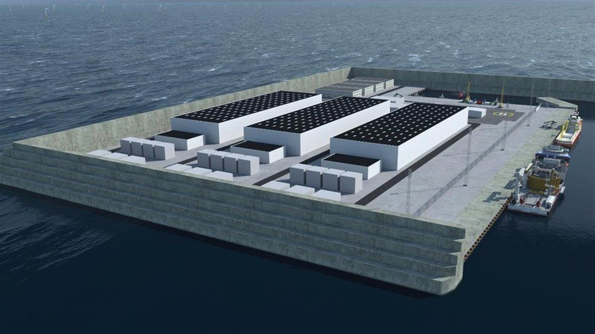
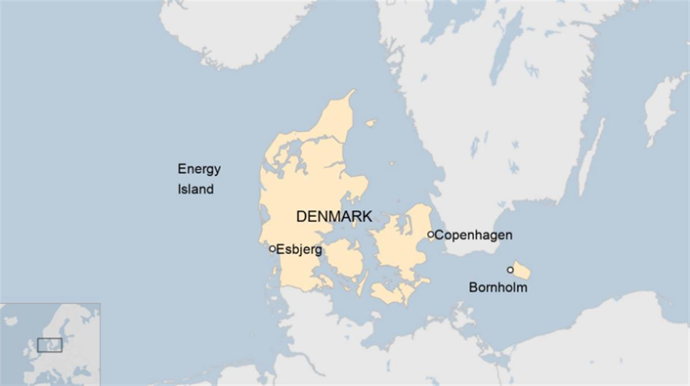

DANISH ENERGY AGENCY - An impression of the island, surrounded by offshore wind turbines, 260m (850ft) in height
DANISH ENERGY AGENCY - An impression of the island, surrounded by offshore wind turbines, 260m (850ft) in height
4 February
Denmark to build 'first energy island' in North Sea
A project to build a giant island providing enough energy for three million households has been given the green light by Denmark's politicians.
The world's first energy island will be as big as 18 football pitches (120,000sq m), but there are hopes to make it three times that size.
It will serve as a hub for 200 giant offshore wind turbines.
It is the biggest construction project in Danish history, costing an estimated 210bn kroner (£24bn; €28bn: $34bn).
Situated 80km (50 miles) out to sea, the artificial island would be at least half-owned by the state but partly by the private sector.
It will not just supply electricity for Danes but for other, neighbouring countries' electricity grids too. Although those countries have not yet been detailed, Prof Jacob Ostergaard of the Technical University of Denmark told the BBC that the UK could benefit, as well as Germany or the Netherlands. Green hydrogen would also be provided for use in shipping, aviation, industry and heavy transport.
Under Denmark's Climate Act, the country has committed to an ambitious 70% reduction in 1990 greenhouse gas emissions by 2030, and to becoming CO2 neutral by 2050. Last December it announced it was ending all new oil and gas exploration in the North Sea.
Energy Minister Dan Jorgensen said the country was simply 'changing the map'.
'This is gigantic,' Prof Ostergaard told the BBC. 'It's the next big step for the Danish wind turbine industry. We were leading on land, then we took the step offshore and now we are taking the step with energy islands, so it'll keep the Danish industry in a pioneering position.'

DANISH ENERGY AGENCY - The plan is for the island to grow from an initial 120,000 sq m in size to 460,000 sq mGreen group Dansk Energi said that while the 'dream was on the way to becoming a reality' it doubted the North Sea island would be up and running by the planned 2033 start date.
But Danish politicians across the spectrum have given their backing to the plan. Former energy minister Rasmus Helveg Petersen of the Social Liberal party said energy islands had begun 'as a radical vision' but there was now a broad agreement to turn it into a reality.
A smaller energy island is already being planned off Bornholm in the Baltic Sea, to the east of mainland Denmark. Agreements have already been signed for electricity to be provided from there to Germany, Belgium and the Netherlands.
Last November the European Union announced plans for a 25-fold increase in offshore wind capacity by 2050, with a five-fold increase by 2030. Renewable energy provides around a third of the bloc's current electricity needs:
- According to the EU, offshore wind supplies a current level of 12 gigawatts
- Denmark supplies 1.7 gigawatts
- The new island would supply an initial 3 gigawatts, rising to 10 over time
- The smaller Bornholm energy island would provide 2 gigawatts
While there is some secrecy over where the new island will be built, it is known that it will be 80km into the North Sea. Danish TV said that a Danish Energy Agency study last year had marked two areas west of the Jutland coast and that both had a relatively shallow sea depth of 26-27m.

SOURCE: BBC